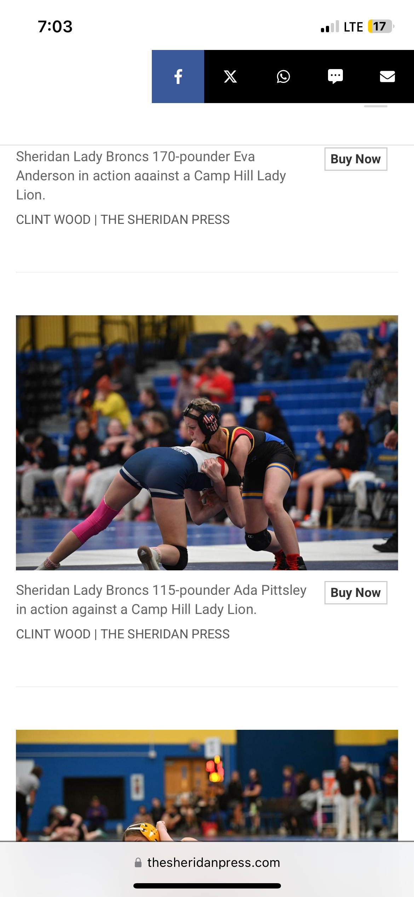
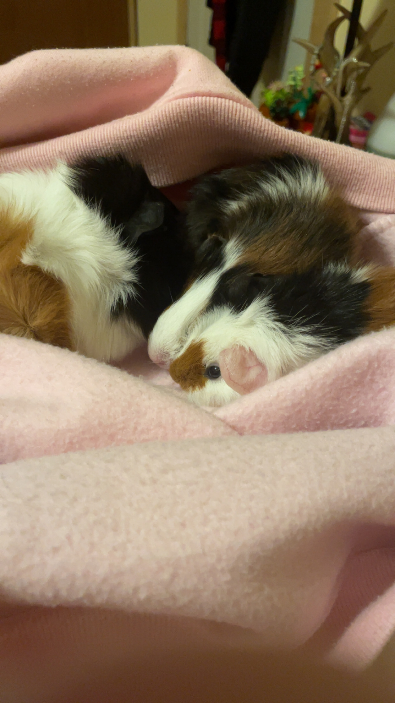

I am in Web Design !
I actually didn't want to a coding class.I also didnt want to train until next year.This was the only class I could take without going to gym this semester. 
My hobbies are sleeping in my bed during the day because I don't sleep at night so I sleep during the day to catch up on sleep. I also have Guinea Pigs that are so sweet to people and naturally squeak at lot.I read a lot. While I can't sleep at night, I'll read during the night to settle me down as much as it can. 3 fun facts about me are I used to hate reading but turns out you have to find the correct books to read. I was a wrestler. I also used to love math but hate it now.I'm actually a big fan of Lil Peep! 
My future goals are to get through high school and get my job for a bit.I would like to travel the world and
see the places people talk about.I would like to find the man/women of my dreams and spend my life with
her/him.